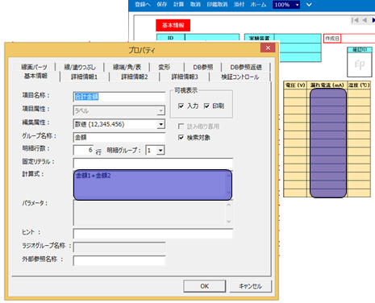

デジタルラボノート『R&D FormPat』
デジタルラボノート『R&D FormPat』 - 目次
- 概要
概要
R&D FormPatは、 研究フロー統合管理システム『 RCM System Software 』を基盤とした研究開発向けに開発されたタブレット型デジタルラボノートです。
紙媒体のラボノートは、ペンで記録する簡便性や、項目を自由に設定できる柔軟性に優れています。本製品は、この簡便性や柔軟性をそのままに、タブレット上にデジタルデータとして直接入力し、自動的にデータベースへの登録することができます。
また、タブレットのカメラから取り込んだ画像や、タブレット上で作成したフリーハンドの線画等も合わせて記録・データベース化することもできます。
R&D FormPatコンセプト
『 R&D FormPat 』により、紙媒体のラボノートに関わる様々な雑務、課題を解決し、より研究に専念できる環境を提供します。 従来の紙媒体のラボノートでは、データを分析するためにエクセルへの転写作業やデータ共有のためにファイルサーバやデータベースへの登録作業が必要でした。作業自体が手間なだけでなく、それら作業により、記録漏れ、転記間違い、保存忘れなど2次的な問題も誘発しています。『 R&D FormPat 』は、これらの問題を纏めて解決し、データ信頼性、データ共有性を向上させつつ、業務効率化を達成します。マニュアルを整備しておけば、ラボノート雛形に添付することができます。マニュアルはデジタルなので、動画など紙媒体のマニュアルでは説明が難しかったような操作も載せることが可能です。 いつでも簡単に詳細な実験手順を参照する環境が実現でき、複雑な実験機器や作業プロセスの実験における操作間違いなどを抑制することが可能です。
『 R&D FormPat 』は、実験環境を革新し、データのデジタル化及び共有化、さらにはAI化を加速させます
◆ 『 R&D FormPat 』の主な特長- ラボノート雛形レイアウト作成機能
-
GUIのよる視覚的な操作だけでラボノート雛形のレイアウトが作成できるので、研究者自身で
ラボノート雛形を作成できます - 入力値の必須、制限設定機能
-
項目欄ごとに入力値が必須かどうかや入力値の制限条件を指定でき、入力漏れや入力間違いを
抑制するラボノートが実現できます
- 計算設定機能
-
項目欄の計算設定式が設定できます。四則演算や簡単な関数（最大最小、平均、平方根など）が
利用できます。実験中にPCなしで簡単な検算、チェックが可能になり、実験の効率化を支援します
- 画像のサムネール表示機能
-
画像ファイルもしくはタブレットカメラで撮像した画像をラボノートに貼り付け、サムネール
表示ができます
- 手書き線画機能
-
タブレット上でフリーハンドの線画を作成することができ、線画をラボノートに添付、
サムネール表示することができます。画像の上に線画を重ね書きすることも可能です
- ファイル添付、紐づけ機能
-
画像ファイル以外のファイル、例えば、PDFの実験操作手順書やofficeファイル、実験バイナリ
データもラボノートに添付することが可能です。また、ファイルの紐づけ機能があるため複数の
ラボノートで共有したいファイルも二重登録は不要です
- ラボノート参照呼び出し機能
-
毎回、たくさんの項目入力は、嫌になりませんか？『 R&D FormPat 』は、既登録のラボノート
の入力値をそのままコピーし、新規のラボノートを書き始められるので、詳細な記録でも省力化が図れます
- 承認フロー機能
-
ラボノート確定のための承認フローを組み入れることが可能です。承認申請中のもの、承認が確定したもの、
差し戻されたもの数は簡単に確認できます
- RCM,ASNARO連携機能
-
RCM,ASNAROとの連携機構を有しており、ラボノート項目単位でのデータベース化、高度な検索、アクセス制御機能がビルトインされているだけでなく、蓄積したデータをグラフツール、AIツール等の様々なアプリケーションでデータ処理するための機能も簡単にシステムに組み込めます
